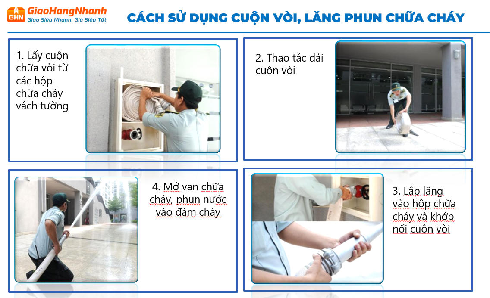

TUÂN THỦ CÁC QUY ĐỊNH
PHÒNG CHÁY CHỮA CHÁY KHO
CÁC HẠNG MỤC TUÂN THỦ VỀ
PHÒNG CHÁY CHỮA CHÁY TẠI CÁC KHO
I. Phân loại các cơ sở cần quản lý PCCC
Đối với cơ sở kho hàng, theo Phụ lục II và Phụ lục III của Nghị định 105/2025/NĐ-CP, đây là loại hình thuộc danh mục cơ sở có nguy hiểm về cháy, nổ. Đối với kho chứa hàng hóa có hạng nguy hiểm cháy nổ A, B hoặc hạng C (thông thường các kho hàng tổng hợp, kho phân loại hàng hóa như GHN được xác định thuộc hạng C), cơ sở được phân thành:
- Nhóm 1: Có tổng diện tích sàn từ 2.000 m² trở lên.
- Nhóm 2: Có tổng diện tích sàn từ 200 m² đến dưới 2.000 m².
Kiểm tra Nhóm quản lý PCCC
Vui lòng nhập diện tích Kho của bạn để theo dõi các thông tin chi tiết
II, TRÁCH NHIỆM CỦA NGƯỜI ĐỨNG ĐẦU CƠ SỞ
- Người đứng đầu cơ sở (gồm người đại diện pháp luật hoặc người được giao quản lý trực tiếp công tác PCCC) chịu trách nhiệm trước pháp luật trong việc tổ chức, duy trì điều kiện an toàn PCCC
- Người đứng đầu cơ sở có thể bị truy cứu trách nhiệm hình sự cá nhân trong trường hợp xảy ra sự cố cháy nổ gây chết người hoặc thiệt hại tài sản/ sức khỏe nghiêm trọng.
- Người đứng đầu cơ sở có thể bị truy cứu trách nhiệm hình sự cá nhân trong trường hợp xảy ra sự cố cháy nổ gây chết người hoặc thiệt hại tài sản/ sức khỏe nghiêm trọng.
III, HỒ SƠ QUẢN LÝ VỀ CÔNG TÁC PCCC & CNCH
Kiểm tra Thành phần Hồ sơ cần có
Nhập diện tích Kho để xem danh sách hồ sơ PCCC tương ứng
CÁC HỒ SƠ CẦN CÓ CHO NHÓM 2 (Kho dưới 2.000 m²)
| STT | Thành phần hồ sơ (Căn cứ ND105/NĐ-CP) | Yêu cầu thực hiện (Không thuộc diện thẩm định) |
|---|---|---|
| 1 | GCN/ Văn bản thẩm định thiết kế PCCC | ❌ Không cần Giấy chứng nhận/Văn bản thẩm định thiết kế và Văn bản chấp thuận nghiệm thu PCCC. |
| 2 | Bản vẽ hoàn công hệ thống | ❌ Chủ đầu tư tự lưu bản vẽ hoàn công xây dựng, thiết kế hệ thống PCCC tự làm để phục vụ bảo dưỡng và giải trình khi bị kiểm tra liên ngành. |
| 3 | Phiếu thông tin cơ sở (Mẫu PC01) | Có lập và tự khai báo thông tin. |
| 4 | Nội quy PCCC & CNCH | Phải có đầy đủ (Tự ký ban hành và niêm yết tại kho). |
| 5 | Đội PCCC cơ sở | Nếu kho có từ 20 người làm việc trở lên: Bắt buộc ra quyết định thành lập đội PCCC cơ sở. Nếu dưới 20 người: Không cần lập đội nhưng phải có văn bản phân công người phụ trách PCCC. |
| 6 | Giấy chứng nhận bảo hiểm cháy nổ bắt buộc | Bắt buộc |
| 7 | Phương án chữa cháy cơ sở (Mẫu PC06) | Chủ cơ sở tự xây dựng và tự phê duyệt, lưu tại kho để diễn tập hàng năm. |
| 8 | Sổ theo dõi phương tiện PCCC, CNCH | Có |
| 9 | Biên bản tự kiểm tra về PCCC (Mẫu PC02) | Có |
| 10 | Văn bản phân công người thực hiện kiểm tra PCCC | Không |
| 11 | Báo cáo kết quả thực hiện công tác PCCC (Mẫu PC04) | Có |
| 12 | Hồ sơ huấn luyện và Thực tập PCCC & CNCH | Có |
| 13 | Hồ sơ bảo trì, bảo dưỡng hệ thống PCCC | Tối thiểu 01 lần/ 1 năm |
| 14 | Tần suất kiểm tra định kỳ của cơ quan nhà nước | 02 năm /1 lần |
CÁC HỒ SƠ CẦN CÓ CHO NHÓM 1 (Kho từ 2.000 m² trở lên)
| STT | Thành phần hồ sơ (Căn cứ ND105/NĐ-CP) | Yêu cầu thực hiện (Thuộc diện phải thẩm định) |
|---|---|---|
| 1 | GCN/ Văn bản thẩm định thiết kế PCCC | BẮT BUỘC PHẢI CÓ: 1. Văn bản thẩm định thiết kế về PCCC (do Công an/Xây dựng cấp). 2. Văn bản chấp thuận kết quả nghiệm thu về PCCC trước khi đưa kho vào hoạt động. |
| 2 | Bản vẽ hoàn công hệ thống | Bắt buộc lưu Bản vẽ hoàn công có đóng dấu xác nhận của chủ đầu tư, nhà thầu và dấu thẩm định của Cơ quan Công an. |
| 3 | Phiếu thông tin cơ sở (Mẫu PC01) | Có lập và khai báo thông tin. |
| 4 | Nội quy PCCC & CNCH | Phải có đầy đủ (Tự ký ban hành và niêm yết tại kho). |
| 5 | Đội PCCC cơ sở | Bắt buộc thành lập Đội PCCC cơ sở hoặc Đội PCCC chuyên ngành |
| 6 | Giấy chứng nhận bảo hiểm cháy nổ bắt buộc | Bắt buộc |
| 7 | Phương án chữa cháy cơ sở (Mẫu PC06) | Chủ cơ sở xây dựng nhưng phải gửi 1 bản lên Cơ quan Công an có thẩm quyền để phê duyệt (hoặc Công an sẽ tự xây dựng phương án phối hợp xe chữa cháy thành phố tùy thuộc vào mức độ nguy hiểm). |
| 8 | Sổ theo dõi phương tiện PCCC, CNCH | Có |
| 9 | Biên bản tự kiểm tra về PCCC (Mẫu PC02) | Có |
| 10 | Văn bản phân công người thực hiện kiểm tra PCCC | Có |
| 11 | Báo cáo kết quả thực hiện công tác PCCC (Mẫu PC04) | Có |
| 12 | Hồ sơ huấn luyện và Thực tập PCCC & CNCH | Có |
| 13 | Hồ sơ bảo trì, bảo dưỡng hệ thống PCCC | Trống |
| 14 | Tần suất kiểm tra định kỳ của cơ quan nhà nước | 01 năm /1 lần |
* Trên đây là các hạng mục Kho cần có để đảm bảo công tác an toàn PCCC :
- Do SHE thực hiện làm hồ sơ Phòng cháy chữa cháy cho các Kho.
- Các điền thông tin theo form mẫu có sẵn và gửi mail cho Team SHE làm hồ sơ.
- Do SHE thực hiện làm hồ sơ Phòng cháy chữa cháy cho các Kho.
- Các điền thông tin theo form mẫu có sẵn và gửi mail cho Team SHE làm hồ sơ.
IV. Yêu cầu trang bị hệ thống PCCC theo đối tượng
Kiểm tra Yêu cầu trang bị hệ thống PCCC
Nhập diện tích kho để biết các hệ thống PCCC bắt buộc phải có
| STT | Hạng mục hệ thống (TCVN 3890 & QCVN 10/2025) | Yêu cầu trang bị | Ghi chú |
|---|
V, QUY ĐỊNH VỀ BỐ TRÍ PHƯƠNG TIỆN PCCC ( TCVN 7435-1:2004 - ISO 11602-1:2000)
1 , TRANG BỊ CÔNG CỤ DỤNG CỤ PCCC-CNCH
Căn cứ vào quy mô và mức độ nguy hiểm cháy nổ theo ND105/2025/NĐ-CP (Phụ lục II), Kho là cơ sở có nguy hiểm cháy nổ cần trang bị tối thiểu một số công cụ dụng cụ như ( loại trừ bình PCCC )
Căn cứ vào quy mô và mức độ nguy hiểm cháy nổ theo ND105/2025/NĐ-CP (Phụ lục II), Kho là cơ sở có nguy hiểm cháy nổ cần trang bị tối thiểu một số công cụ dụng cụ như ( loại trừ bình PCCC )
Bảng số lượng trang bị căn cứ theo Phụ lục I - TT 36/2025/TT-BCA:
| STT | Danh mục CCDC | Thông số | Đơn vị | TH1 :Có tổng diện tích sàn từ 2.000 m² trở lên( thuộc diện phải thẩm định) | TH2 :Kho có diện tích sàn từ 200 m2 đến dưới 2.000 m² (Không thuộc diện thẩm định) |
|---|---|---|---|---|---|
| 1 | Hệ thống đèn Exit & Sự cố | Tự động sáng khi mất điện ( TCVN 13456) | Bộ | Theo thiết kế | Số lượng theo các cửa ra vào/ cửa thoát hiểm của kho |
| 2 | Tiêu lệnh/ Nội quy PCCC | Kích thước tiêu chuẩn 32x44 cm hoặc 40x18cm | Bộ | Theo thiết kế | Cần trang bị tối thiểu 1 bộ, tùy thuộc vào diện tích của Kho để trang bị cho phù hợp |
| 3 | Đèn pin chuyên dụng | Độ sáng tối thiểu 200 lm, chịu nước tối thiểu IP X5 | Chiếc | 02 | 02 |
| 4 | Rìu cứu hỏa | Chất liệu đầu rìu bằng thép cacbon cao | Chiếc | 02 | 02 |
| 5 | Xà Beng | Xà beng (một đầu nhọn, một đầu dẹt; dài tối thiểu 100 cm) | Chiếc | 01 | 01 |
| 6 | Búa tạ | Búa (chất liệu đầu búa bằng thép cacbon cao, nặng tối thiểu 5 kg,) | Chiếc | 01 | 01 |
| 7 | Kìm công lực | Kìm cộng lực (có tải cắt tối thiểu 60 kg) | Chiếc | 01 | 01 |
| 8 | Mặt nạ | Mặt nạ lọc độc hoặc mặt nạ phòng độc cách ly | Bộ | 03 | 03 |
Lưu ý triển khai thực tế:
Hệ thống chiếu sáng & chỉ dẫn: Đèn Exit và đèn sự cố phải lắp tại các cửa và lối ra thoát nạn. GHN thường có 2 lối thoát hiểm (cửa chính và cửa ngách), do đó số lượng tối thiểu là 2 bộ để đảm bảo bao quát hướng di chuyển.
Hướng mở cửa: Tất cả cửa thoát hiểm phải là loại mở ra ngoài nhằm đảm bảo thoát nạn an toàn và tránh ùn tắc khi xảy ra sự cố khẩn cấp.
Tiêu lệnh/Nội quy PCCC: Đối với Kho có diện tích lớn và nhiều vị trí bố trí bình chữa cháy, cần niêm yết bổ sung Nội quy và Tiêu lệnh PCCC tại các điểm đặt bình và khu vực có nguy cơ cháy nổ cao.
Hệ thống chiếu sáng & chỉ dẫn: Đèn Exit và đèn sự cố phải lắp tại các cửa và lối ra thoát nạn. GHN thường có 2 lối thoát hiểm (cửa chính và cửa ngách), do đó số lượng tối thiểu là 2 bộ để đảm bảo bao quát hướng di chuyển.
Hướng mở cửa: Tất cả cửa thoát hiểm phải là loại mở ra ngoài nhằm đảm bảo thoát nạn an toàn và tránh ùn tắc khi xảy ra sự cố khẩn cấp.
Tiêu lệnh/Nội quy PCCC: Đối với Kho có diện tích lớn và nhiều vị trí bố trí bình chữa cháy, cần niêm yết bổ sung Nội quy và Tiêu lệnh PCCC tại các điểm đặt bình và khu vực có nguy cơ cháy nổ cao.
2, TRANG BỊ BÌNH PCCC
* Trường hợp 1: Bưu cục và Kho có diện tích sàn dưới 2000 m² không thuộc diện phải làm thẩm duyệt thiết kế. Định mức trung bình 100 m²/ Bình chữa cháy loại Bột MFZ8
Lưu ý: Định mức nêu trên là tiêu chí an toàn nội bộ của Công ty, áp dụng đối với các kho/bưu cục không thuộc diện thẩm duyệt thiết kế PCCC, nhằm tăng cường mức độ an toàn phòng cháy chữa cháy.
* Trường hợp 1: Bưu cục và Kho có diện tích sàn dưới 2000 m² không thuộc diện phải làm thẩm duyệt thiết kế. Định mức trung bình 100 m²/ Bình chữa cháy loại Bột MFZ8
Lưu ý: Định mức nêu trên là tiêu chí an toàn nội bộ của Công ty, áp dụng đối với các kho/bưu cục không thuộc diện thẩm duyệt thiết kế PCCC, nhằm tăng cường mức độ an toàn phòng cháy chữa cháy.
🧮
Công cụ tính số lượng bình chữa cháy (Dành cho Kho)
Công cụ tính toán số bình tự động theo quy định
* Trường hợp 2: Kho lớn diện tích sàn từ 2000 m² trở lên có thuộc diện thẩm duyệt thiết kế, có setup sẵn hệ thống phòng cháy chữa cháy tự động và vách tường thì số lượng, chủng loại và vị trí bố trí bình chữa cháy được thực hiện theo bản vẽ thiết kế PCCC đã được cơ quan có thẩm quyền thẩm duyệt và phê duyệt.
Một số yêu cầu về bình chữa cháy
- Bình chữa cháy phải đặt ở vị trí dễ thấy, dễ lấy, không bị che chắn bởi hàng hóa.
- Bình có đầy đủ loa phun, vòi phun, tem kiểm định, phiếu kiểm tra bảo dưỡng bình.
- Bình chữa cháy được gắn phiếu kiểm tra bình chữa cháy Bưu cục thực hiện kiểm tra và ký xác nhận định kỳ hàng tháng (30 ngày/lần).
Một số yêu cầu về bình chữa cháy
- Bình chữa cháy phải đặt ở vị trí dễ thấy, dễ lấy, không bị che chắn bởi hàng hóa.
- Bình có đầy đủ loa phun, vòi phun, tem kiểm định, phiếu kiểm tra bảo dưỡng bình.
- Bình chữa cháy được gắn phiếu kiểm tra bình chữa cháy Bưu cục thực hiện kiểm tra và ký xác nhận định kỳ hàng tháng (30 ngày/lần).
3, QUY ĐỊNH VỀ VIỆC TỰ KIỂM TRA , BẢO TRÌ BẢO DƯỠNG HỆ THỐNG PCCC ĐỊNH KỲ
| STT | Hạng mục | Tần suất | Căn cứ pháp luật | Ghi chú kỹ thuật áp dụng cho kho hàng |
|---|---|---|---|---|
| 1 | Tần suất tự kiểm tra định kỳ tổng thể của kho | * 06 tháng/lần (Kho thuộc diện nguy hiểm cháy nổ - Phụ lục II) | Khoản 2 Điều 14 Nghị định 105/2025/NĐ-CP | Sau khi kết thúc phải lập Biên bản kiểm tra Mẫu PC02. Khoảng cách giữa các kỳ kiểm tra thường xuyên không quá 01 tháng/lần. |
| 2 | Chế độ gửi báo cáo cơ quan chức năng | Trước 15/06 và Trước 15/12 hằng năm | Khoản 2 Điều 14 Nghị định 105/2025/NĐ-CP | Phải gửi Báo cáo kết quả công tác PCCC Mẫu PC04 đến UBND cấp xã hoặc Công an quản lý (hoặc nộp online). Hồ sơ phải lưu trữ ít nhất 05 năm. |
| 3 | Hệ thống báo cháy tự động | Bảo dưỡng kỹ thuật ít nhất 01 lần/năm | 1.5.13. Thông tư 103/2025/TT-BCA | Vệ sinh đầu báo khói/nhiệt để tránh bụi bẩn từ hàng hóa bám vào gây báo cháy giả; kiểm tra tủ trung tâm và nút ấn khẩn cấp. |
| 4 | Hệ thống chữa cháy Sprinkler & họng nước vách tường | Bảo dưỡng kỹ thuật ít nhất 01 lần/năm | 1.5.13. Thông tư 103/2025/TT-BCA | * Kiểm tra áp lực nước, vòi, lăng phun. * Đặc biệt lưu ý: Hàng hóa xếp trong kho không được cao quá, phải đảm bảo khoảng cách an toàn đến đầu phun Sprinkler. |
| 5 | Bình chữa cháy xách tay / bình có bánh xe | Tự kiểm tra định kỳ 01 lần/tháng Bảo dưỡng kỹ thuật ít nhất 06 tháng /1 lần |
1.5.13. Thông tư 103/2025/TT-BCA | Kiểm tra áp suất kim đồng hồ (vạch xanh), chốt niêm phong. Bình phải đặt ở vị trí dễ thấy, không bị hàng hóa che khuất. |
| 6 | Đường lối thoát nạn & hệ thống đèn sự cố | Tự kiểm tra thường xuyên hàng tháng | Điểm h, m, o Khoản 1 Điều 13 Nghị định 105/2025/NĐ-CP | Lối đi giữa các kệ hàng, cửa thoát hiểm của kho phải luôn thông thoáng, tuyệt đối không chất hàng cản trở. Kiểm tra độ sáng đèn EXIT. |
| 7 | Giải pháp ngăn cháy lan & Hệ thống điện | Tự kiểm tra thường xuyên | Điểm e, h Khoản 1 Điều 13 Nghị định 105/2025/NĐ-CP | Kiểm tra tình trạng hoạt động của cửa cuốn ngăn cháy giữa các phân kho; kiểm tra an toàn đi dây điện tránh quá tải gây chập mạch vào hàng hóa. |
VI, QUY ĐỊNH XỬ PHẠT VI PHẠM VỀ PCCC ( Nghị định 106/2025/ND-CP)
Điều 9. Vi phạm quy định hồ sơ về phòng cháy, chữa cháy, cứu nạn, cứu hộ
Phạt từ 1.000.000 – 3.000.000 đồng: Không có đủ tài liệu trong hồ sơ quản lý theo quy định.
Phạt từ 5.000.000 – 7.000.000 đồng: Không lập hồ sơ về PCCC và CNCH.
Điều 17. Vi phạm quy định về bảo hiểm cháy, nổ bắt buộc
Phạt từ 10.000.000 – 15.000.000 đồng: Mua bảo hiểm không đúng mức phí quy định hoặc nộp thiếu tiền trích cho hoạt động PCCC (từ 50% đến dưới 100%).
Phạt từ 20.000.000 – 30.000.000 đồng: Nộp thiếu dưới 50% tổng số tiền trích cho hoạt động PCCC từ bảo hiểm.
Phạt từ 30.000.000 – 40.000.000 đồng: Không mua bảo hiểm cháy, nổ bắt buộc đối với cơ sở nguy hiểm về cháy, nổ thuộc Nhóm 2.
Phạt từ 40.000.000 – 50.000.000 đồng: Không mua bảo hiểm đối với cơ sở thuộc Nhóm 1 hoặc không nộp tiền trích cho hoạt động PCCC từ bảo hiểm.
Điều 18. Vi phạm quy định về thẩm định thiết kế, nghiệm thu về phòng cháy và chữa cháy
Phạt từ 15.000.000 – 20.000.000 đồng: Tự ý cải tạo, bổ sung công năng công trình hoặc hoán cải phương tiện khi chưa có văn bản thẩm định thiết kế.
Phạt từ 20.000.000 – 25.000.000 đồng: Thi công công trình hoặc đóng mới phương tiện thuộc diện phải thẩm duyệt khi chưa có văn bản thẩm định thiết kế.
Phạt từ 30.000.000 – 50.000.000 đồng: Đưa công trình, phương tiện vào sử dụng khi chưa có văn bản chấp thuận kết quả nghiệm thu (Bị đình chỉ hoạt động từ 3 - 6 tháng).
Phạt từ 40.000.000 – 50.000.000 đồng: Đưa công trình, phương tiện vào hoạt động khi chưa có cả văn bản thẩm định thiết kế và nghiệm thu (Bị đình chỉ hoạt động từ 6 - 12 tháng).
Điều 20. Vi phạm quy định về trang bị, lắp đặt phương tiện phòng cháy, chữa cháy, cứu nạn, cứu hộ
Thiếu sót về dụng cụ thô sơ/đèn sự cố:
Phạt từ 1.000.000 – 2.000.000 đồng nếu trang bị không đúng quy định;
phạt từ 3.000.000 – 5.000.000 đồng nếu không trang bị dụng cụ thô sơ;
phạt từ 10.000.000 – 15.000.000 đồng nếu không lắp đèn chiếu sáng sự cố, biển chỉ dẫn thoát nạn.
Vi phạm đối với Đội PCCC cơ sở/chuyên ngành:
Phạt từ 8.000.000 – 10.000.000 đồng nếu trang bị không đúng quy định;
phạt từ 15.000.000 – 25.000.000 đồng nếu không trang bị phương tiện PCCC cho các đội này.
Hệ thống báo cháy, chữa cháy:
Phạt từ 30.000.000 – 40.000.000 đồng nếu lắp đặt hệ thống không bảo đảm tiêu chuẩn.
Phạt từ 40.000.000 – 50.000.000 đồng nếu không trang bị, lắp đặt hệ thống báo cháy hoặc hệ thống chữa cháy (Bị đình chỉ hoạt động từ 3 - 6 tháng)..
Điều 28. Vi phạm quy định về hệ thống Cơ sở dữ liệu về phòng cháy, chữa cháy, cứu nạn, cứu hộ và truyền tin báo cháy
Sai sót thông tin: Phạt từ 500.000 – 1.000.000 đồng nếu khai báo không đầy đủ thông tin cơ sở/phương tiện vào hệ thống.
Trễ nải, chậm cập nhật: Phạt từ 1.000.000 – 3.000.000 đồng do không cập nhật thông tin khi có thay đổi hoặc không trả chi phí duy trì thiết bị truyền tin báo cháy.
Không khai báo: Phạt từ 5.000.000 – 10.000.000 đồng nếu không khai báo thông tin cơ sở vào hệ thống.
Lập lờ, ngắt kết nối: Phạt từ 10.000.000 – 15.000.000 đồng nếu cố ý ngắt kết nối hoặc không sửa chữa hư hỏng làm mất tín hiệu truyền tin báo cháy.
Không trang bị: Phạt từ 20.000.000 – 30.000.000 đồng nếu không trang bị, lắp đặt thiết bị truyền tin báo cháy hoặc không kết nối với hệ thống Cơ sở dữ liệu PCCC.
Phạt từ 1.000.000 – 3.000.000 đồng: Không có đủ tài liệu trong hồ sơ quản lý theo quy định.
Phạt từ 5.000.000 – 7.000.000 đồng: Không lập hồ sơ về PCCC và CNCH.
Điều 17. Vi phạm quy định về bảo hiểm cháy, nổ bắt buộc
Phạt từ 10.000.000 – 15.000.000 đồng: Mua bảo hiểm không đúng mức phí quy định hoặc nộp thiếu tiền trích cho hoạt động PCCC (từ 50% đến dưới 100%).
Phạt từ 20.000.000 – 30.000.000 đồng: Nộp thiếu dưới 50% tổng số tiền trích cho hoạt động PCCC từ bảo hiểm.
Phạt từ 30.000.000 – 40.000.000 đồng: Không mua bảo hiểm cháy, nổ bắt buộc đối với cơ sở nguy hiểm về cháy, nổ thuộc Nhóm 2.
Phạt từ 40.000.000 – 50.000.000 đồng: Không mua bảo hiểm đối với cơ sở thuộc Nhóm 1 hoặc không nộp tiền trích cho hoạt động PCCC từ bảo hiểm.
Điều 18. Vi phạm quy định về thẩm định thiết kế, nghiệm thu về phòng cháy và chữa cháy
Phạt từ 15.000.000 – 20.000.000 đồng: Tự ý cải tạo, bổ sung công năng công trình hoặc hoán cải phương tiện khi chưa có văn bản thẩm định thiết kế.
Phạt từ 20.000.000 – 25.000.000 đồng: Thi công công trình hoặc đóng mới phương tiện thuộc diện phải thẩm duyệt khi chưa có văn bản thẩm định thiết kế.
Phạt từ 30.000.000 – 50.000.000 đồng: Đưa công trình, phương tiện vào sử dụng khi chưa có văn bản chấp thuận kết quả nghiệm thu (Bị đình chỉ hoạt động từ 3 - 6 tháng).
Phạt từ 40.000.000 – 50.000.000 đồng: Đưa công trình, phương tiện vào hoạt động khi chưa có cả văn bản thẩm định thiết kế và nghiệm thu (Bị đình chỉ hoạt động từ 6 - 12 tháng).
Điều 20. Vi phạm quy định về trang bị, lắp đặt phương tiện phòng cháy, chữa cháy, cứu nạn, cứu hộ
Thiếu sót về dụng cụ thô sơ/đèn sự cố:
Phạt từ 1.000.000 – 2.000.000 đồng nếu trang bị không đúng quy định;
phạt từ 3.000.000 – 5.000.000 đồng nếu không trang bị dụng cụ thô sơ;
phạt từ 10.000.000 – 15.000.000 đồng nếu không lắp đèn chiếu sáng sự cố, biển chỉ dẫn thoát nạn.
Vi phạm đối với Đội PCCC cơ sở/chuyên ngành:
Phạt từ 8.000.000 – 10.000.000 đồng nếu trang bị không đúng quy định;
phạt từ 15.000.000 – 25.000.000 đồng nếu không trang bị phương tiện PCCC cho các đội này.
Hệ thống báo cháy, chữa cháy:
Phạt từ 30.000.000 – 40.000.000 đồng nếu lắp đặt hệ thống không bảo đảm tiêu chuẩn.
Phạt từ 40.000.000 – 50.000.000 đồng nếu không trang bị, lắp đặt hệ thống báo cháy hoặc hệ thống chữa cháy (Bị đình chỉ hoạt động từ 3 - 6 tháng)..
Điều 28. Vi phạm quy định về hệ thống Cơ sở dữ liệu về phòng cháy, chữa cháy, cứu nạn, cứu hộ và truyền tin báo cháy
Sai sót thông tin: Phạt từ 500.000 – 1.000.000 đồng nếu khai báo không đầy đủ thông tin cơ sở/phương tiện vào hệ thống.
Trễ nải, chậm cập nhật: Phạt từ 1.000.000 – 3.000.000 đồng do không cập nhật thông tin khi có thay đổi hoặc không trả chi phí duy trì thiết bị truyền tin báo cháy.
Không khai báo: Phạt từ 5.000.000 – 10.000.000 đồng nếu không khai báo thông tin cơ sở vào hệ thống.
Lập lờ, ngắt kết nối: Phạt từ 10.000.000 – 15.000.000 đồng nếu cố ý ngắt kết nối hoặc không sửa chữa hư hỏng làm mất tín hiệu truyền tin báo cháy.
Không trang bị: Phạt từ 20.000.000 – 30.000.000 đồng nếu không trang bị, lắp đặt thiết bị truyền tin báo cháy hoặc không kết nối với hệ thống Cơ sở dữ liệu PCCC.
VII, HƯỚNG DẪN XỬ LÝ TRƯỜNG HỢP KHẨN CẤP
1, Quy trình ứng phó khi xảy ra sự cố khẩn cấp
![[Chèn ảnh Quy trình ứng phó tại đây]](images/Quy_trinh_ung_pho.jpg) [Chèn ảnh/video Quy trình ứng phó]
[Chèn ảnh/video Quy trình ứng phó]2, Cách sử dụng Bình chữa cháy
👉 Nhấn vào đây để xem Video hướng dẫn sử dụng chi tiết
![[Chèn ảnh Cách sử dụng Bình chữa cháy tại đây]](images/Cach_su_dung_binh_chua_chay.jpg) [Chèn ảnh Cách sử dụng Bình chữa cháy]
[Chèn ảnh Cách sử dụng Bình chữa cháy]3, Cách sử dụng cuộn vòi, lăng phun chữa cháy

[Chèn ảnh Cách sử dụng cuộn vòi, lăng phun]